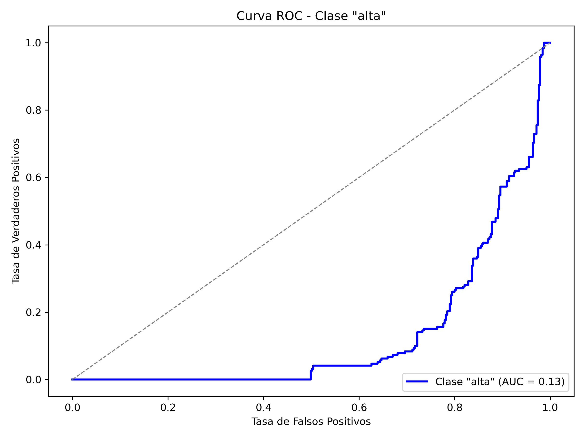
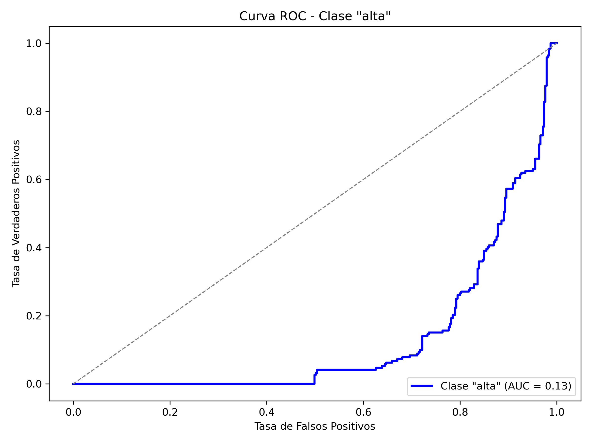

Descubre cómo analizamos los locales de Madrid para mejorar la inteligencia de negocio y apoyar la toma de decisiones estratégicas.
Este proyecto analiza y clasifica locales de Madrid utilizando técnicas de ciencia de datos, aprendizaje automático y visualización interactiva.
 
